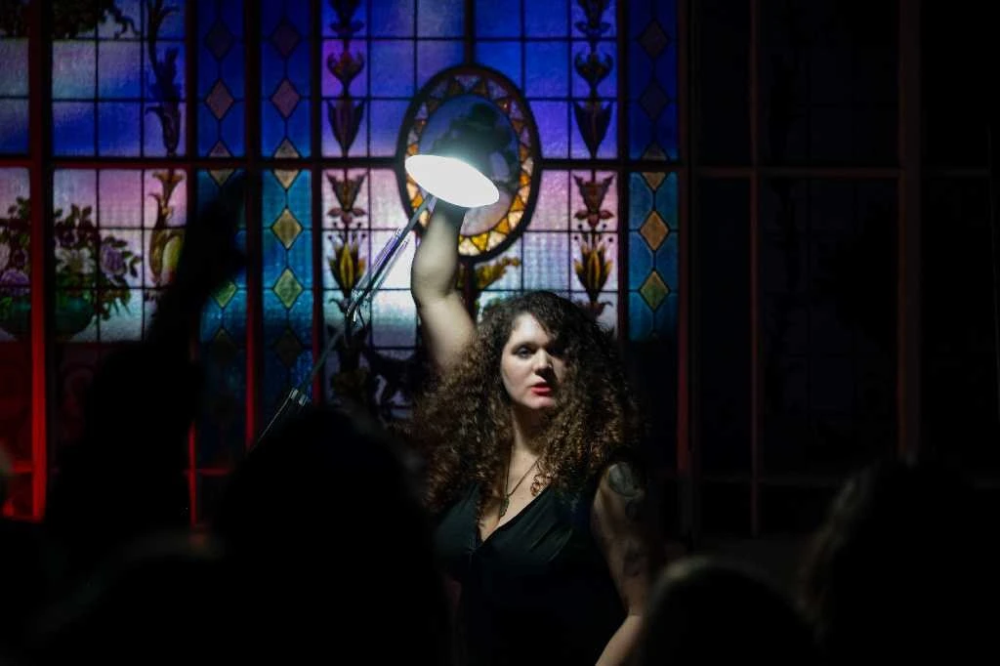
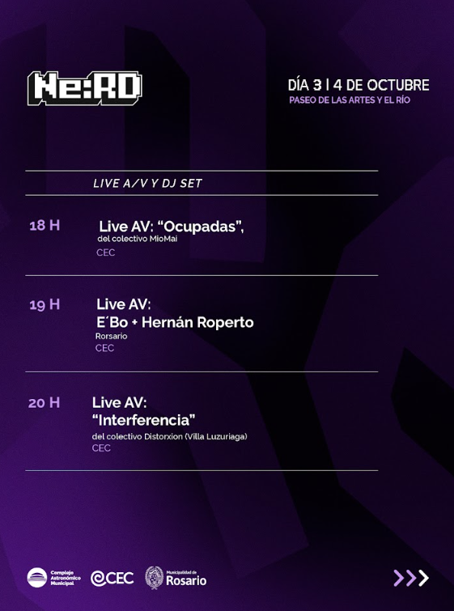
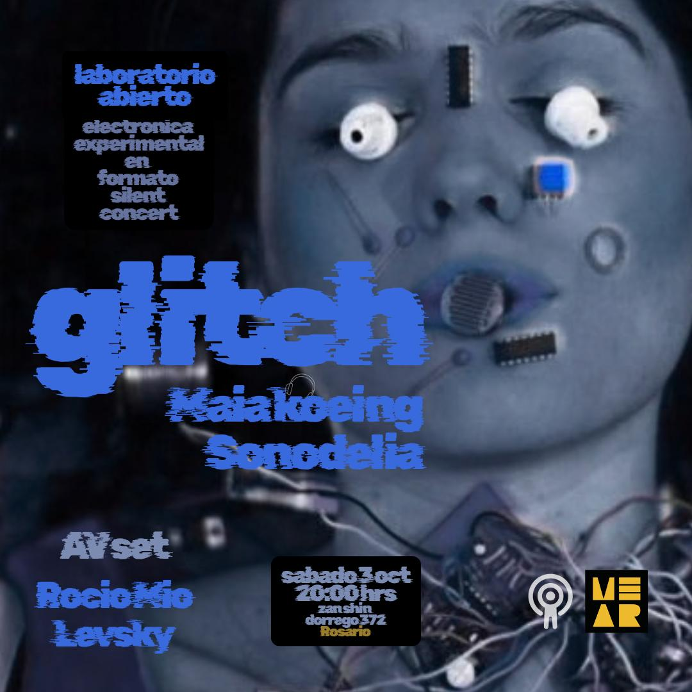
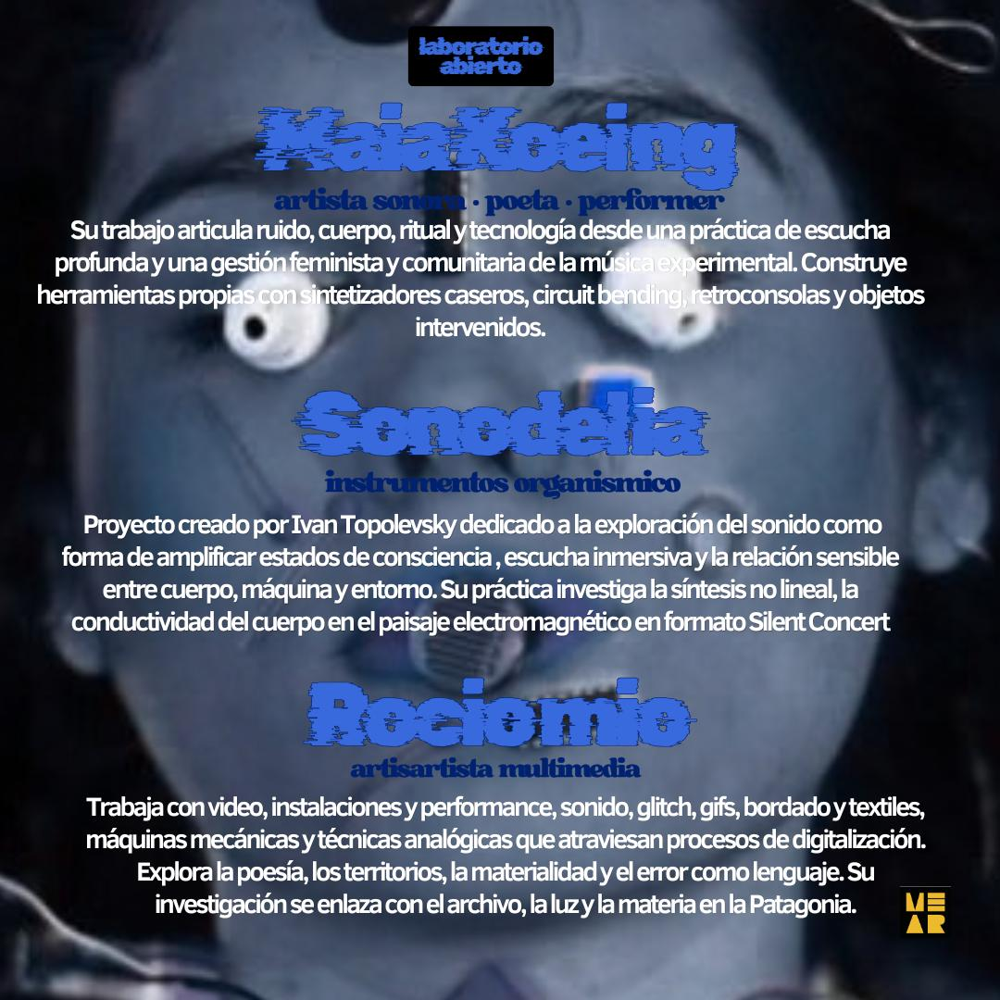

Ruido
Noise, paisaje sonoro, voz, hardware hacking y frecuencias que se vuelven presencia.
Una danza, una liberación; entre glitch, noise e interferencias.
OCUPADAS . Live AV Festival Ne:Rd 2026
.jpg)



Las máquinas ocupadas no son herramientas neutrales ni objetos que solo buscan ser utilizados. Son territorios que se intervienen y se habitan con el cuerpo: movimiento, contacto y presión en medio del caos cotidiano.
Entre la maternidad y el arte en la ruralidad patagónica, la obra abre un espacio para volver la mirada hacia nosotras mismas. Porque estamos tan ocupadas en otrxs que necesitamos ocuparnos de nuestra obra: siendo juntas.
Hacer ruido, romper la imagen, explorar el error de esta existencia, darle valor a lo privado y cuidarseLa obra articula prácticas analógicas, digitales y sonoras para construir una experiencia siempre inédita. Máquinas construidas a mano, explorar nuestra sensibilidad juntas, registrarnos.
Noise, paisaje sonoro, voz, hardware hacking y frecuencias que se vuelven presencia.
Contacto, presión, movimiento y vision y escucha profunda: el cuerpo como instrumento y territorio.
Error, desvío y falla como lenguaje. Lo que se rompe abre otra forma de mirar y hacer.
Máquinas, objetos, textiles, archivo, territorio y tecnologías obsoletas en mutación.
.jpg)
.jpg)
.jpg)
.jpg)
.jpg)
.jpg)



OCUPADAS dialoga constantemente con la fuga: una experiencia que se transforma en cada encuentro, entre la improvisación, la presencia y el sonido.
Una obra para habitar la escena, hacer vibrar la máquina y abrir un lugar para nosotras.
Trabaja con video, instalaciones y performance, sonido, glitch, gifs, bordado y textiles, máquinas mecánicas y técnicas analógicas que atraviesan procesos de digitalización. Explora la poesía, los territorios, la materialidad y el error como lenguaje. Su investigación se enlaza con el archivo, la luz y la materia en la Patagonia.
Su trabajo articula ruido, cuerpo, ritual y tecnología desde una práctica de escucha profunda y una gestión feminista y comunitaria de la música experimental. Construye herramientas propias con sintetizadores caseros, circuit bending, retroconsolas y objetos intervenidos. La maternidad atraviesa sus tiempos, preguntas y formas de crear comunidad.
OCUPADAS
Visuales: Rocío Mío
Música: Maia Koenig
Contacto de producción: a completar según sala / festival.